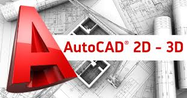

Pré-requisitos |
Descrição |
Carga Horária |
Curso de usuário Windows ou conhecimento equivalente Recomenda-se a avaliação prática com docente da unidade ofertante. Escolaridade: Ensino médio incompleto Idade: 16 anos completos |
Identificar os materiais e instrumentos de desenho; Desenhar plantas de projetos no papel utilizando as ferramentas adequadas e seguindo com consciência as normas e padrões vigentes; Realizar cotagem de elementos; Determinar e identificar os tipos de escalas para projetos; Medir, traçar e calcular distâncias, ângulos e áreas de figuras planas e volumétricas; Interpretar plantas baixas, cortes, vistas, projeções e perspectivas; Realizar projeção ortográfica de modelos diversos; Interpretar os tipos de corte e hachuras. |
Total de 111 horas |
Seja o diferencial nesse Mundo Tecnológico e tenha uma Carreira ao Sucesso! |
||